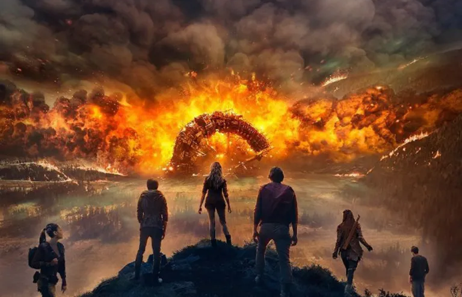
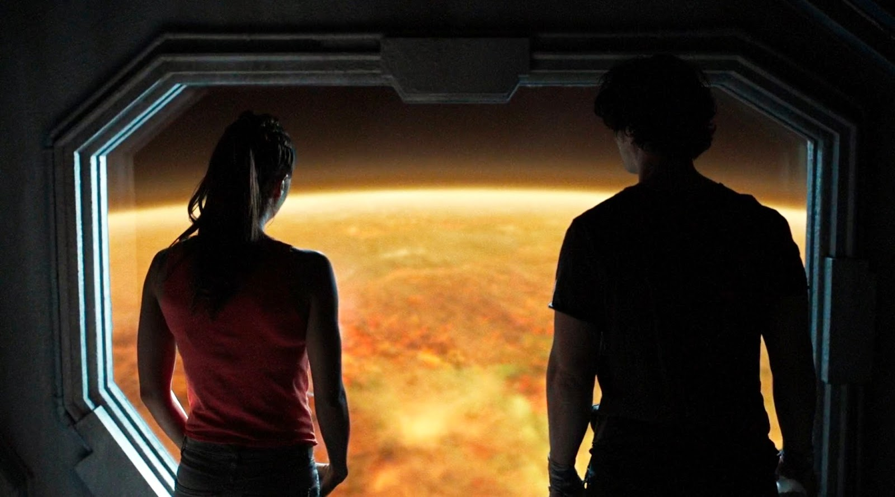
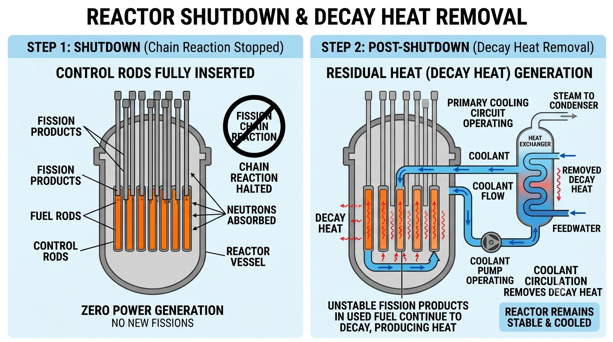
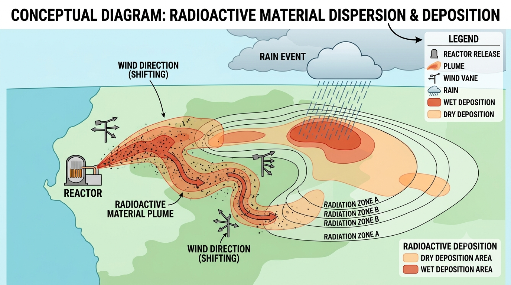
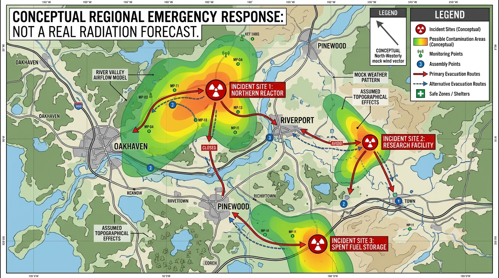

What The 100 Got Wrong About Nuclear Reactor Meltdowns

Season 4 of The 100 gives its survivors a terrifying deadline: the nuclear power plants left behind by the old world are supposedly beginning to fail, and radiation levels are expected to make the surface uninhabitable within months. It is an effective setup for the next apocalypse. The real-world engineering, however, is much less tidy: a shutdown reactor can still overheat, but reactor failures do not automatically create one synchronized, planet-wide death wave.
The central issue is not whether nuclear accidents can be dangerous. Chernobyl and Fukushima prove that they can. It is the leap from a collection of abandoned facilities to a near-simultaneous global catastrophe. To judge that premise, we need to separate reactor shutdown, residual heat, radioactive releases, atmospheric transport, and the wider consequences of a collapsed response system.
- What the show says
- What it gets right
- A reactor is not a nuclear bomb
- Reactors can shut down automatically
- The important catch: decay heat
- A 100-year timer is not how reactors work
- Radiation does not behave like a fire wave
- There is no single danger radius
- Could a few dozen reactors make Earth uninhabitable?
- What Chernobyl and Fukushima actually show
- What a more realistic disaster would look like
- The verdict
- Sources and further reading
What exactly does The 100 say?

In the Season 4 premiere, “Echoes,” Raven explains that after a second Fukushima disaster, Panacea Power patented a fail-safe system with multiple redundancies. She says that by 2048, two dozen “mega reactors” had been built to withstand even a nuclear attack, and that the plants were designed to be self-sustaining for a hundred years. The first nuclear apocalypse is dated to around 2052, so the story places the reactors’ supposed hundred-year limit close to the time of the series.
Earlier in the episode, the characters are told that nuclear plants damaged by the bombs have begun to melt down, radiation levels are rising, and the surface will become uninhabitable. Raven estimates roughly six months before conditions become fatal at the current rate. The show uses the reactors as the mechanism behind the next Praimfaya, but does not explain in engineering detail how the failures occur or how releases from separate sites combine into a worldwide threat.
That missing chain of cause and effect is the real weakness. “Self-sustaining for a hundred years” works as a fictional countdown, but real plants differ in design, condition, fuel state, location, shutdown history, and the systems available to remove heat. They would not all reach an identical expiry date and fail in the same way.
The episode’s premise is captured in TheWrap’s recap of “Echoes” and the episode transcript.
First, the show is right about one thing: nuclear accidents can be serious
Nuclear power plants contain radioactive material and produce heat that must be controlled. Losing cooling, electrical power, or other important safety functions can damage fuel and allow radioactive substances to escape. Evacuations, contaminated land, disruption to food supplies, expensive clean-up, and long-term restrictions are all realistic consequences.
The accidents at Chernobyl and Fukushima show that these are not imaginary risks. They also show why the details matter: the amount released, the material involved, the weather, the exposure pathways, and the response all influence the consequences. Their actual outcomes are compared later in this article.
So the accurate criticism is not “a reactor meltdown could never be dangerous.” It is that a serious accident at one plant does not automatically produce a uniform, fast-moving, planet-wide radiation wave.
1. A nuclear reactor does not explode like an atomic bomb
The word “nuclear” can bring a mushroom cloud to mind, but a commercial power reactor is not a nuclear weapon. Its fuel, geometry, and operating conditions are not arranged to produce the rapid, uncontrolled energy release of a nuclear warhead. The U.S. Nuclear Regulatory Commission makes this distinction in its radiation-protection FAQ.
That does not make a reactor accident gentle. Severe damage can cause steam explosions, hydrogen explosions or fires, pressure failures, and structural damage. Those events can be destructive and can accompany a radioactive release, but they are not nuclear-bomb detonations.
The wider radiological hazard begins when radioactive material escapes the plant’s barriers and reaches the environment through air, water, dust, or other pathways. How serious that becomes depends on what is released, how much escapes, and where it goes.
2. Reactors are designed to shut down automatically when key conditions go wrong
Reactor protection systems monitor important operating conditions. Depending on the design, these can include reactor power, pressure, coolant flow, water level, and other safety parameters. When a monitored value reaches a specified limit, the system can initiate a rapid shutdown, commonly called a scram or reactor trip. In many reactor designs, control rods move into the core and absorb neutrons, quickly interrupting the sustained fission chain reaction.
Loss of grid power is a recognized safety challenge, not an automatic meltdown sentence. The NRC explains that nuclear plants use multiple, mostly electrically powered cooling systems and emergency diesel generators to provide backup electricity when the main supply is lost. These systems are intended to keep essential safety functions available; they do not promise indefinite operation after every possible failure. See the NRC’s backgrounder on nuclear reactor risk.
Automatic shutdown is therefore not a magic force field. It stops the sustained chain reaction, but it does not remove the heat already in the fuel or repair damaged equipment. If cooling, backup power, instrumentation, or other safety layers are unavailable for long enough, a reactor that has shut down can still suffer severe damage.

3. The important catch: shutting down does not mean the reactor instantly goes cold
This is the part that gives a realistic reactor-accident story its teeth. Even after the sustained fission chain reaction stops, radioactive fission products in the fuel continue to decay and release heat. This is called decay heat. For a reactor that has been operating at full power, the U.S. Department of Energy’s reactor-theory handbook gives an initial decay-heat level of roughly 5–6% of the previous thermal power, falling to less than 1% after about an hour. The exact amount depends on the reactor’s operating history, but the remaining heat still has to be removed. See the DOE Fundamentals Handbook on Nuclear Physics and Reactor Theory.
Think of a very large industrial oven after its main heating element has been switched off: the heat does not vanish at the instant the switch is turned. A reactor is far more complex, but the comparison captures the key point. Stopping the chain reaction and removing the heat are two different tasks.
If a plant cannot remove decay heat, its fuel can overheat and become damaged. If several safety systems fail, a core meltdown is possible. That is a genuine concern in a world where operators, electrical supplies, maintenance, and emergency response have disappeared. It still does not create a universal countdown that makes every reactor fail at the same age.
Used nuclear fuel is another hazard that an abandoned site may contain. After removal from a reactor, it remains hot and radioactive and is first stored in water-filled pools so the water can absorb heat and shield radiation. After it has cooled for a period of years, older fuel may be moved into dry-storage casks. The U.S. Department of Energy explains this process in its guide to spent-fuel wet storage. An abandoned site could therefore have more than one kind of radioactive-material management problem.
4. A 100-year timer is not how real nuclear plants work
The show’s “self-sustaining for a hundred years” line is a convenient way to create a deadline. Real nuclear plants are not sealed appliances with a single expiry date. They require trained staff, monitoring, inspection, maintenance, suitable water and power systems, replacement parts, and planned fuel management. Components age at different rates: a pump, valve, cable, seal, generator, cooling line, or sensor will not all fail on the same schedule.
For the fictional claim to be convincing, “self-sustaining” would need a much clearer meaning. Can the plant detect faults, shut down safely, remove decay heat, and keep backup systems available? How are damaged components, corrosion, depleted supplies, and spent fuel managed? Automation can reduce the need for people, but it cannot be assumed to repair every failed component or replenish every consumable. A century without human maintenance is an extraordinary engineering claim, not a normal feature of power reactors.
Nor would every site fail together. A plant damaged in the first nuclear war might already be shut down; another could lose grid power and trip automatically; a third might remain intact and shut down safely. Design, fuel condition, climate, flooding, fire, structural damage, and remaining backup systems would all affect what happened next.
Even “abandoned reactor” covers different situations. A site could contain an operating unit, a unit in suspended operation, or a permanently shut-down plant in decommissioning. These states do not have identical fuel inventories or safety conditions. The International Atomic Energy Agency’s Country Nuclear Power Profiles distinguishes among these statuses.
5. Radiation does not behave like a wall of fire sweeping around the planet
The 100 presents Praimfaya as a “death wave” moving across the landscape. That is an effective visual metaphor, but radioactive contamination does not normally form a neat, uniformly lethal front that passes over every place in sequence. Radiation is energy emitted by radioactive material; contamination means radioactive substances have been deposited where they are not wanted. A reactor release can create a plume of gases, particles, or aerosols that travels with the atmosphere, with some material later deposited on land or water.
Wind direction, rainfall, particle size, release height, terrain, the radionuclides involved, and the timing of the release all influence where material goes. Rain can wash particles out of the atmosphere and create local deposition hotspots. Two towns at similar distances from a plant can receive different levels of contamination, while a more distant place downwind can receive some fallout. The pattern is irregular, not a perfect circle or a smooth ring expanding at one speed.
Real radioactive plumes can travel far and can be dangerous. The important difference is that dose and contamination vary over time and location. A plume has no simple visible edge that tells people exactly when a place has become safe or unsafe; measurements and radiation-protection advice are needed.

6. There is no single danger radius around a reactor
There is no single distance from a reactor at which everyone is in danger, followed by a sharp line beyond which everyone is safe. The affected area depends on the amount and type of material released, the weather, where it is deposited, and how people encounter it.
Close to a severe release, people may face high doses or heavy contamination. Farther away, radioactive material may still be detectable but produce a much smaller dose. Food, milk, crops, surface water, and dust can become exposure pathways, so a community’s risk is not determined by distance alone.
Chernobyl demonstrates how uneven the effects can be. UNSCEAR reports that average first-year effective doses in European countries outside Belarus, the Russian Federation, and Ukraine were generally below 1 mSv, while the most affected workers and residents received much higher doses. The radioactive material spread across borders, but the resulting exposure was not remotely uniform. See the UN assessment of the Chernobyl accident.
Emergency decisions therefore rely on monitoring, projected dose, exposure routes, and local conditions—not on one universal radius. Distance matters, but it is only one part of the picture.
7. Could a few dozen reactors really make the entire Earth uninhabitable?
The number of reactors alone cannot answer this. The “mega reactors” in The 100 are fictional, and the show does not give enough information about their power output, fuel inventory, containment design, operating state, or the fraction of radioactive material that would escape. A simple comparison with today’s commercial reactors would therefore be misleading.
For scale, the IAEA’s Country Nuclear Power Profiles dashboard listed 417 reactors in operation worldwide as of 31 October 2026. That count is useful context, not a calculation of accident consequences: the fictional reactors may have very different capacities and inventories, and the number of units alone tells us little about how much material would be released.
Several dozen severe accidents around the same period could cause an international disaster. Regions near multiple sites might face overlapping contamination, while governments struggle to monitor food and water, move people, restore electricity, and coordinate clean-up. Transport failures, damaged hospitals, food shortages, and the loss of trained responders could cause secondary harm far beyond the most contaminated areas.
That scenario could devastate societies without making every square kilometre of Earth instantly lethal. To establish a truly planet-wide uninhabitability claim, the story would need to explain the size and timing of the releases, how the radioactive material dispersed, what doses populations received, and why distant or less affected areas could not remain habitable.
8. What Chernobyl and Fukushima actually show
Chernobyl and Fukushima are useful comparisons because they show both the seriousness of a major release and the unevenness of its consequences. Neither accident created a uniformly lethal environment across the planet.
| Event | What happened | What it teaches us |
|---|---|---|
| Chernobyl, 1986 | A reactor was destroyed and an intense fire released radioactive material. Some nearby areas suffered severe contamination, and contamination was detected well beyond the exclusion zone. | A major release can have long-lasting regional and cross-border effects, but the exposure level varied greatly by place and population. |
| Fukushima Daiichi, 2011 | Earthquake and tsunami damage caused loss of power and compromised safety functions. Three reactors suffered severe core damage, with radioactive material released over time. | Backup systems and cooling matter enormously. Severe reactor damage does not automatically make every country or every part of Earth uninhabitable. |
UNSCEAR's Fukushima assessment notes that roughly 20% of the atmospheric release was dispersed over the Japanese land mass, while much of the remainder was dispersed over the Pacific Ocean. That does not mean the accident was harmless; thousands of people were evacuated, communities were disrupted, and remediation has been extensive. It does illustrate why a release is shaped by wind and geography rather than becoming a uniform coating over the planet. See the UNSCEAR Fukushima FAQ.
UNSCEAR reported that no adverse health effects among Fukushima residents had been documented that could be directly attributed to radiation exposure from the accident, and that such effects were not expected to become detectable in the future from the assessed exposures. This finding is specific to the doses and populations evaluated; it does not erase the evacuations, social disruption, worker risks, or the possibility of higher doses in a different accident.
The real lesson is not that reactors are harmless. It is that accident outcomes depend on details: how the plant was operating, which barriers failed, what escaped, how the material moved, who was exposed, and how quickly authorities acted. Fiction often compresses all those variables into one visual event.
9. What a more realistic abandoned-reactor apocalypse might look like
A more convincing version of The 100 would keep the abandoned-reactor threat but show different sites following different paths. Some plants would be damaged by the war; others might trip and shut down safely. At sites where cooling, power, monitoring, or spent-fuel management later failed, serious problems could emerge on different timelines rather than on one shared anniversary.
The danger would then interact with the wider collapse. A release during bad weather could contaminate particular communities or food-producing areas. Elsewhere, the greater immediate threat might be the loss of electricity, hospitals, clean water, transport, trained staff, and reliable information. Multiple emergencies would stretch any remaining authorities and could turn local contamination into a much broader humanitarian crisis.
There is also a crucial distinction between land being contaminated and land being permanently uninhabitable. Some places might need evacuation, food restrictions, monitoring, or long-term clean-up; others might remain usable with controls. That uneven, changing map could still create a terrifying survival story without requiring one invisible wall to make the whole planet lethal.

The verdict: great stakes, shaky science
The 100 uses its reactor storyline to force impossible choices: who gets into the bunker, who is left behind, and how much time remains before the world changes again. As television drama, the deadline works. As nuclear engineering, the explanation leaves major gaps.
The weakness is not that abandoned nuclear sites could never release radioactive material. It is that the show does not establish the chain connecting a hundred-year design limit to widespread simultaneous failures, large releases at many sites, a particular global contamination pattern, and the loss of nearly every safe place within six months.
To make Praimfaya scientifically convincing, the story would need to show why individual cooling systems fail, how much material escapes, how weather carries it, what doses people receive, and how the collapse of infrastructure compounds the danger. Without that chain, the death wave works as science-fiction shorthand—not as the expected result of nuclear plants simply being left alone for a century.
| Common claim or story assumption | What is more accurate |
|---|---|
| Reactors reach a hundred years and then fail. | There is no universal expiry timer. Equipment and sites degrade differently, and safety depends on design, condition, and whether systems are maintained. |
| A reactor meltdown is a nuclear-bomb explosion. | Core damage, steam or hydrogen explosions, fire, and radioactive releases are possible; a commercial power reactor does not detonate like a nuclear weapon. |
| Automatic shutdown means there is no further danger. | Shutdown stops the sustained chain reaction, but decay heat remains and must be removed. A loss of cooling can still cause severe damage. |
| Radiation moves as a single lethal wave. | Radioactive plumes are shaped by weather and deposition. Dose and contamination vary widely by location and exposure route. |
| Several dozen severe reactor accidents automatically make Earth uninhabitable. | Multiple severe accidents could be a global humanitarian crisis, but global uninhabitability does not follow automatically from the number of reactors. |
Sources and further reading
The explanations above draw on official nuclear-safety and radiation-assessment material alongside recaps of the show's Season 4 setup. The sources explain the real mechanisms; they do not independently verify the fictional “mega reactor” technology.
- The 100, Season 4, Episode 1: “Echoes” transcript. Source for the fictional Panacea Power and hundred-year reactor premise.
- TheWrap — “The 100” Season 4 premiere recap. Additional context for the episode’s storyline.
- U.S. Department of Energy — Fundamentals Handbook: Nuclear Physics and Reactor Theory, Volume 2. Technical explanation of decay heat after reactor shutdown.
- U.S. Nuclear Regulatory Commission — Backgrounder on Nuclear Reactor Risk. Cooling systems, backup power, and the role of plant operators and maintenance.
- U.S. Nuclear Regulatory Commission — Radiation Protection FAQ. Explains why a nuclear power reactor does not explode like a nuclear weapon.
- U.S. Department of Energy — Nuclear Fuel Cycle 101: Wet Storage. Explains why used fuel needs cooling and how it is later moved to dry storage.
- UNSCEAR — Fukushima 2020/2021 Report FAQ. Assessment of the accident, atmospheric dispersion, exposure, and health findings.
- UNSCEAR — The Chornobyl Accident. Assessment of radionuclide releases, doses, and effects in affected regions and farther away.
- IAEA — Country Nuclear Power Profiles. Reactor operating-status context; the dashboard figure cited in this article is dated 31 October 2026.
This article is a science-based critique of a fictional television storyline, not a site-specific risk assessment. Actual nuclear emergencies should be handled according to local emergency services and radiation-protection authorities; do not approach a damaged nuclear facility or attempt to assess contamination by sight.
Suggested Quizzes
Put your apocalypse knowledge to the test with these survival and TV-show quizzes.